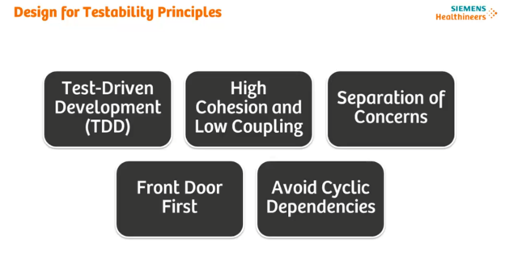
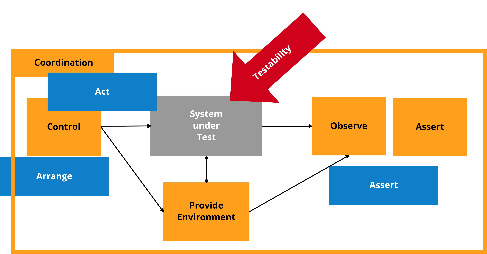
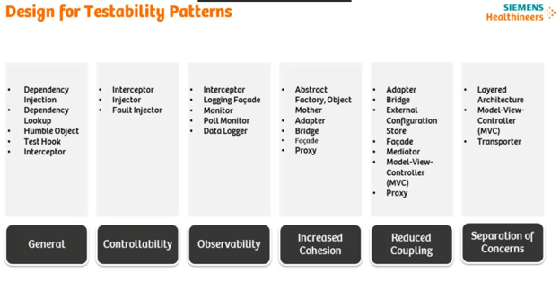
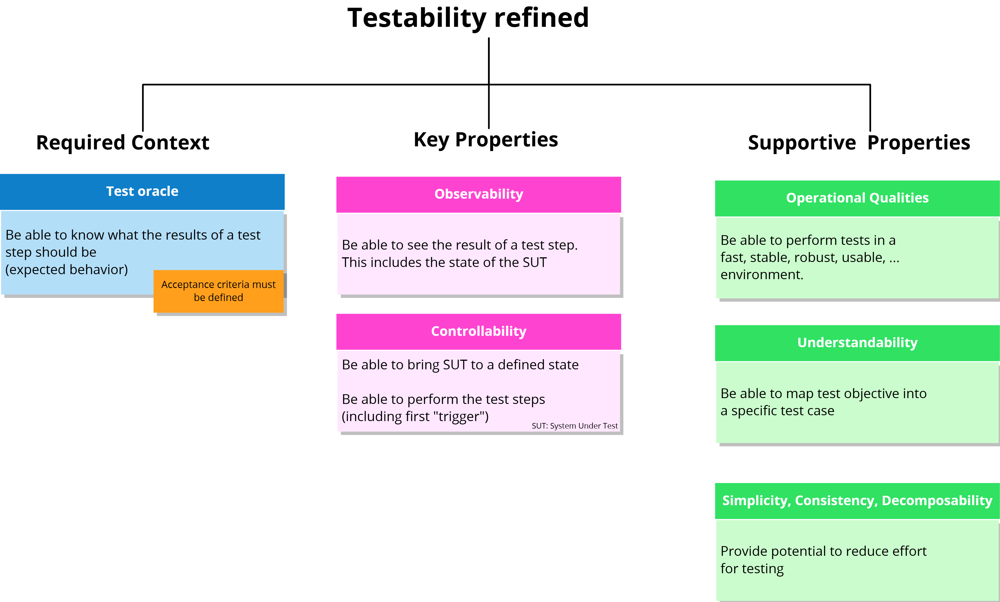
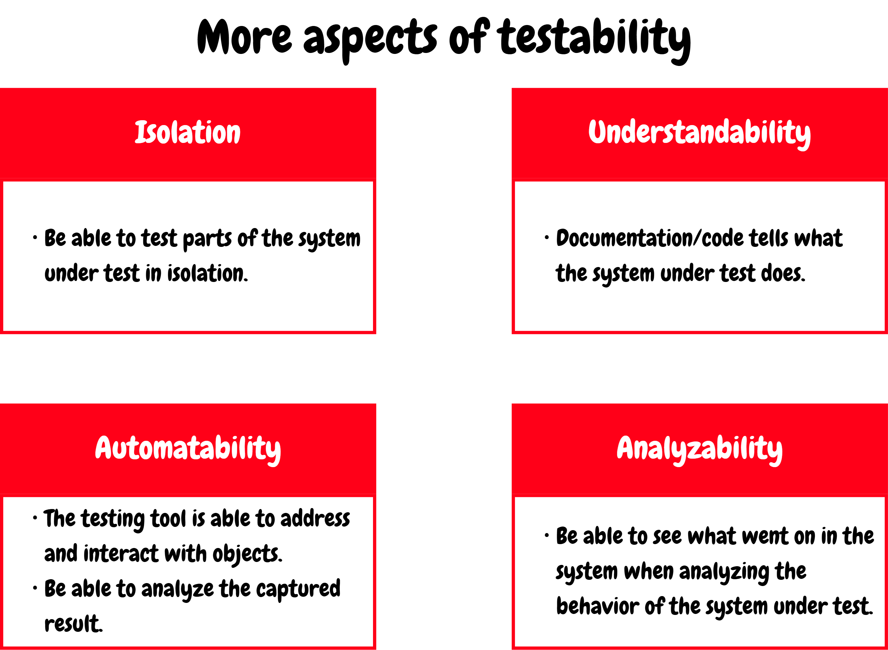
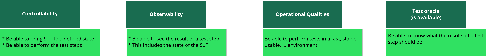
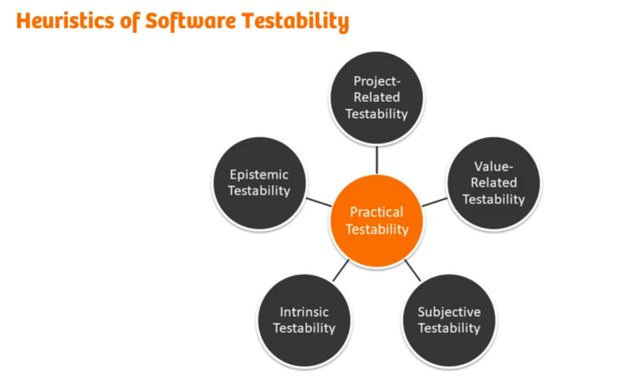
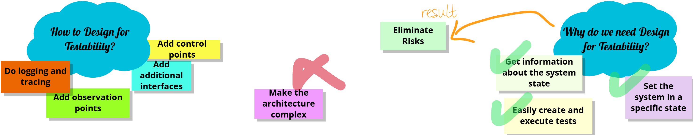

Design for Testability
Design for Testability (DFT) – that is, design focused on testability – is an architectural and design approach aimed at incorporating features that facilitate testing directly into the structure of a software system. Testability is not an incidental by-product of development, but a key non-functional quality characteristic (NFR). A fundamental architectural rule applies: for a system to be tested effectively, it must be designed to be testable.

Front Door First means that a module, class, or component should be tested through its official public interface (Public API).
From the perspective of a software architect and a test architect, DFT is a decisive factor in overall maintainability, delivery speed (time-to-market), technical debt management, and the reduction of development costs. Insufficient testability leads to highly fragile tests, an inability to isolate faults, slow regression testing, and a disproportionate increase in the cost of finding and correcting defects in the later stages of the life cycle.

#Definitions and Basic Concepts
#1. Software Testability (Software Testability)
- Definition: The degree of effectiveness and efficiency with which test criteria can be established for a system, product, or component, and tests can be performed to determine whether those criteria have been met. James Bach distinguishes three dimensions of testability:
- Intrinsic (Intrinsic): Determined by the properties of the code and architecture themselves (observability, controllability, decomposability, algorithms).
- Practical (Practical): How easy it is for a particular tester to test the system in a given context and process.
- Epistemic (Epistemic): The size of the gap between what we know about the system and what we need to know about it.
- Significance in architecture: Determines the extent to which the architecture supports verification of its properties (both functional and NFR) at different levels of abstraction.
- Significance in testing: Directly affects the effort required, test coverage, the feasibility of automation, and the ability to locate defects.
- Typical mistake or misunderstanding: Equating testability solely with the existence of unit tests or high code coverage, regardless of the architecture.
#2. Controllability (Controllability)
- Definition: The degree of ability to supply control inputs to the system under test (SUT), induce the required states, or reset the system to a known initial state through control points.
- Significance in architecture: Requires the design of interfaces (API, configuration, DI) that allow any system state to be set without having to go through complex real-world scenarios.
- Significance in testing: A fundamental prerequisite for deterministic, repeatable, and fully automated testing (for example, triggering error states).
- Typical mistake or misunderstanding: Claiming that controllability means bypassing security or validation mechanisms in the production environment.
#3. Observability and Visibility (Observability / Visibility)
- Definition: The degree of ability to monitor the outputs, internal states, resource consumption, side effects, and error conditions of the system under test through observation points.
- Significance in architecture: Requires built-in structured logging, metrics, diagnostic tools (dumps, tracing), and clearly defined output interfaces.
- Significance in testing: “What cannot be seen cannot be tested.” Observability enables reliable evaluation of test results (test oracles).
- Typical mistake or misunderstanding: Relying exclusively on monitoring the visual user interface (GUI) instead of monitoring internal states and data flows.
#4. Isolability and Decomposability (Isolability & Decomposability)
- Definition: The ability to divide a system into separate, loosely coupled modules with high cohesion that can be tested independently of other parts of the system.
- Significance in architecture: Application of layered architecture, interfaces, and patterns such as Ports & Adapters (Hexagonal) or Microservices.
- Significance in testing: Enables the use of test doubles (Test Doubles – Stubs, Mocks, Fakes) to isolate dependencies and speed up test execution.
- Typical mistake or misunderstanding: Using globally shared state (Singletons, databases) between components, which prevents parallel and independent test execution.
#5. Testability Interfaces (Testability Interfaces)
- Definition: Dedicated (internal or external) interfaces designed specifically for testing, diagnostics, and controlling the state of the SUT.
- Significance in architecture: The architect must determine the scope, access permissions, and performance and security implications of these interfaces (for example, calls available only in a debug build or protected by a diagnostic protocol).
- Significance in testing: Provide “back-door” access (back-door manipulation) to set preconditions or verify postconditions where the front door is excessively slow or unavailable.
- Typical mistake or misunderstanding: Leaving testability interfaces active and unprotected in the production environment, thereby creating security vulnerabilities.
#6. Design Tactics for Testability (DFT Tactics)
- Definition: Architectural and design decisions (for example, Dependency Injection, Separation of Concerns, Humble Object) that directly increase the observability and controllability of code.
- Significance in architecture: A tool for the architect to prevent untestable code from being created before implementation even begins.
- Significance in testing: Dramatically simplify writing unit and integration tests and reduce the need for complex test environment setup.
- Typical mistake or misunderstanding: Viewing these tactics as an academic exercise with no real impact on business or development speed.




Example from the embedded / safety-related domain: In an engine control unit (ECU) governed by ISO 26262, testability requires the separation of hardware-dependent code (HAL/OS) from application logic. It also requires a diagnostic interface (for example, through the CAN/UDS bus or XCP protocol) that allows a test bench (HIL bench) to inject sensor faults (fault injection) and read the internal state of the algorithm without having to physically remove the sensor.

Heuristics of Software Testability (Software Testability Heuristics), by testing expert James Bach. The central idea of this model is that the testability of any system is determined not only by the quality of the source code itself, but is the dynamic result of the interaction of five different dimensions.
The central node, Practical Testability (Practical Testability), represents the overall, real-world situation – how easily, effectively, and confidently the particular system can be tested at a given moment. This situation is directly influenced by five external factors:
- Intrinsic Testability (Intrinsic Testability): This concerns the properties of the product and architecture themselves (for example, the integration of hardware and software components). It includes observability (whether the system generates diagnostic logs and status messages) and controllability (whether the system can be placed in a specific error state through an API or dedicated interfaces). Clearly defined interfaces and low coupling between components (loose coupling) radically increase this testability.
- Epistemic Testability (Knowledge-Related / Epistemic Testability): This concerns the information that exists about the system and is available. It includes the quality of specifications, the accuracy of software models (for example, state diagrams), and the level of detail in technical documentation for microcontrollers or other components. If a system exhibits unexpected behavior and lacks architectural documentation, this aspect of testability is very low.
- Project-Related Testability (Project-Related Testability): This reflects logistics, processes, and infrastructure. It means the existence of a stable test environment, reliable CI/CD pipelines, automated builds, debugging tools, and, not least, whether the development team has been allocated time and a budget for thorough testing.
- Subjective Testability (Subjective Testability): This defines the knowledge, skills, and domain expertise of the particular person performing the testing. A developer or tester who thoroughly understands register behavior, linker scripts, or standards such as MISRA C++ will uncover critical problems much faster than someone without these specific skills.
- Value-Related Testability (Value-Related Testability): This introduces the perspective of risk analysis and efficiency. It assesses whether the effort spent testing a particular property corresponds to its importance to the functioning of the whole. Ensuring 100% coverage of a critical failsafe routine has enormous value, whereas exhaustive testing of a cosmetic logging script may waste resources.
In practice, overall testability is always a compromise. For example, if you design an excellent, fully controllable architecture (high Intrinsic), but lack the necessary integration infrastructure (low Project-Related) and the hardware specifications are outdated (low Epistemic), the real-world testability (Practical Testability) of the entire system decreases significantly.
#Common Mistakes and Anti-Patterns
#1. Architectural Mistakes
- Tight coupling and monolithic code (God Object): Components instantiate their dependencies directly (
new Service()) or share internal data structures.- Why it is a problem: Prevents dependencies from being replaced with test doubles and prevents isolated testing.
- How it manifests: Unit tests cannot be written without starting the entire database server or external services.
- Prevention: Use the Inversion of Control (IoC) principle, Dependency Injection, and strict separation of interfaces from implementations.
- Excessive use of the Singleton design pattern and global state:
- Why it is a problem: Retains state between individual tests, violating the principle of test independence.
- How it manifests: Tests behave unreliably (flickering/flaky tests) – they passed individually, but fail when run as a suite, depending on their order.
- Prevention: Pass dependencies through the constructor and manage object life cycles explicitly.
#2. Requirements Mistakes
- Vaguely defined or untestable non-functional requirements (NFRs): Statements such as “the system must be fast and highly available”.
- Why it is a problem: Acceptance criteria and interfaces for verifying the quality in question are missing.
- How it manifests: The testing team cannot design verification scenarios or evaluate whether a test has succeeded.
- Prevention: Define NFRs using measurable metric-based scenarios (quantitative limits, for example, latency < 100 ms at 1000 req/s).
#3. Test Strategy Mistakes
- Neglecting DFT until the Design Freeze stage:
- Why it is a problem: Testability is treated as an “afterthought” only when automation fails.
- How it manifests: Enormous costs of refactoring production code late in the project.
- Prevention: Involve the test architect in architectural reviews from the outset; testability requirements are part of the backlog and have the same priority as functional requirements.
#4. Automation Mistakes
- The Retry Failed Tests anti-pattern:
- Why it is a problem: Masks architectural errors in SUT isolation and state management by repeatedly running failed tests until they pass.
- How it manifests: Loss of trust in tests and delayed detection of real timing and concurrency defects.
- Prevention: Consistent SUT isolation, resetting state before every test, and correcting the cause of instability instead of working around it with a retry mechanism.
- Overengineered and overspecified tests (Overspecified Tests):
- Why it is a problem: Tests verify internal implementation details (the exact order of internal method calls through mocks) instead of observable behavior.
- How it manifests: Any refactoring of the code (that does not change external functionality) causes dozens of tests to fail.
- Prevention: Test through the public interface (Front-door first principle), focusing on resulting states rather than interaction details.
#5. Mistakes in Interpreting Testability
- Mixing test logic into production code:
- Why it is a problem: Inserting conditions such as
if (isTestingMode) { ... }directly into application logic. - How it manifests: The code executed during testing differs from the code executed in production; untested branches create a risk of production failures.
- Prevention: Separate test configuration through polymorphism, Dependency Injection, or Test-Specific Subclasses.
- Why it is a problem: Inserting conditions such as
#6. Communication Mistakes
- Silo mentality (Development vs. Testing):
- Why it is a problem: The architect and developers design the code without consulting testers, who then receive an untestable black box “over the wall”.
- How it manifests: Long automation cycles, an inability to create stable stubs/mocks, and constant confrontation between teams.
- Prevention: Joint creation of acceptance criteria (BDD/ATDD) and regular dialogue between the SW architect and the test architect.
#Examination Questions
#1. Basic Questions
- Question 1: How is software testability defined, and what are its two main components from a practical perspective?
- Answer note: The answer must include the definition according to the standard (ISO 9126 / IEEE) and the two key components: controllability (controllability) and observability (observability), including an explanation of control and observation points.
- Question 2: What is the difference between “front-door” and “back-door” testing?
- Answer note: The front door uses the public API/interface available to ordinary clients. The back door uses special testability interfaces, stubs, mocks, or direct state access to speed up the test or establish error states.
#2. Intermediate Questions
- Question 3: Which architectural patterns and tactics directly support testability at the component level?
- Answer note: The candidate should name layered architecture, Dependency Injection, Inversion of Control, Adapter/Facade, and the Humble Object pattern for separating untestable infrastructure (for example, GUI/HW) from testable logic.
- Question 4: How does the SW architect's role support testability in the early stages of the project life cycle?
- Answer note: Formulation of NFR requirements for testability, prevention of cyclic dependencies, definition of interfaces and component isolation before design freeze, and close collaboration with the Test Manager / Test Architect.
#3. Advanced Questions
- Question 5: Explain the “Humble Object” pattern and give an example of its use in architecture.
- Answer note: The answer must explain extracting logic from an object that is difficult to test (GUI, GUI controller, HW module, framework interface) into a pure, easily testable object without dependencies, while the original object remains “humble” and contains only a minimum of wiring code.
#4. Questions About Practical Experience
- Question 6: How do you handle a situation in which you need to test a legacy system that suffers from tight coupling, lacks testability interfaces, and has no unit tests?
- Answer note: Mention techniques from Michael Feathers's book (Working Effectively with Legacy Code): identifying seams, gradually refactoring around critical functions, and establishing a safety net of protective characterization tests at a higher level before modifying the internal structure.
#5. Questions About Trade-Off Decisions
- Question 7: Which architectural trade-offs must you consider when increasing the testability of a system?
- Answer note: Analysis of the conflict between testability and encapsulation (encapsulation), performance (performance), security (security), and code complexity (overhead). A good answer explains how to balance these conflicts without compromising production parameters.
#Model Examination Answer
(A model continuous response for an oral examination, approximately 4–5 minutes long)
The topic of Design for Testability (DFT) represents one of the most critical architectural pillars of modern software engineering.
Testability means the degree of effectiveness and ease with which test criteria can be established for a software system and tests can be performed to determine whether those criteria have been met. From an architect's practical perspective, testability rests on two fundamental pillars: controllability (controllability) and observability (observability). Controllability tells us how easily we can bring the system under test into the required state and supply it with test inputs. Observability indicates the extent to which we can monitor the system's internal states, outputs, and side effects. If a system does not have sufficient observability or controllability, effective testing and automation become impossible.
For software architecture, testability is essential because it directly correlates with modularity, loose coupling, and high cohesion. Software cannot be tested effectively unless it has been designed for this from the outset. If the architect ignores testability, the result is monolithic code full of global state, hidden dependencies, and tight coupling.
From a testing perspective, DFT has a fundamental economic and quality impact. Studies (for example, Stefan Jungmeier) show that testing-related costs often account for more than 40% of total development costs, while proper design for testability can save up to 10% of the total project budget. High testability enables early fault detection (shift-left), dramatically accelerates fault diagnosis and localization, and provides a safety net for refactoring.
Let us consider a practical example from embedded / automotive software. Suppose we have a braking system control unit (ECU). The application logic for calculating braking torque must not be tightly coupled to reading the microcontroller's physical registers. The architect designs a layered architecture with a hardware abstraction layer (HAL). The architect also incorporates a diagnostic testability interface and the Inversion of Control pattern into the architecture. This allows the application logic to be run and tested in a fully automated manner in a simulator on a developer's computer (SIL – Software-in-the-Loop), using test doubles without having to connect a physical brake test bench (HIL).
Incorporating testability also introduces architectural trade-offs:
- Testability vs. Encapsulation (Encapsulation): Exposing internal states for tests can compromise encapsulation. The solution is to use Dependency Injection or testability interfaces instead of opening up private variables.
- Testability vs. Performance (Performance): Added abstractions, interfaces, and logging may introduce slight time and memory overhead. In the vast majority of cases, however, this is negligible compared with the benefits.
- Testability vs. Security (Security): Testability interfaces and diagnostic inputs can provide back doors for attackers if they remain active in production. The architect must ensure their strict isolation (for example, compilation only for debug builds or encrypted authentication).
In conclusion, design for testability is a shared commitment of the SW architect, the test architect, and developers. Incorporating testability into the architecture from the very beginning significantly reduces technical debt, shortens development time, and guarantees high quality in the final product.”
#11. Short Version for Quick Review
#5 Main Points
- Untestable code is poor-quality code: A system must be designed so that it can be tested.
- Two pillars of DFT: Controllability (inputs/states) and observability (outputs/internal states).
- Shift-Left in architecture: Testability must be addressed as an NFR before the architectural design is frozen.
- Architectural tactics: Dependency isolation (DI), layering, the Humble Object pattern, and testability interfaces.
- Significant cost savings: Faster regression testing, reduced flakiness, and savings of up to 10% of the total budget.
#5 Key Terms
- Software Testability (Software Testability)
- Controllability & Observability (Controllability and Observability)
- Testability Interfaces / Control & Observation Points (Testability Interfaces and Points)
- Humble Object Pattern (Humble Object Pattern)
- Flaky / Flickering Tests (Unstable Tests Caused by Poor Isolation)
#5 Typical Examination Questions
- What is testability, and what are its two fundamental dimensions from an automation perspective?
- Which architectural anti-patterns are most damaging to testability?
- What are the principle and purpose of the Humble Object design pattern?
- What are the main acceptance trade-offs when increasing testability?
- How do the SW architect and Test manager/architect collaborate in promoting DFT?
#3 Most Common Mistakes
- Test-Last approach: Trying to address testability only when monoliths without interfaces have already been completed.
- Ignoring state isolation: Using global state/Singletons, leading to the re-try anti-pattern for failing tests.
- Overengineered tests (Overspecified Tests): Testing internal implementation details through an excessive number of mocks instead of testing observable behavior.
#1 Concise Model Sentence to Use in the Examination
“Design for Testability is a deliberate architectural decision to build controllability and observability into a system through loose coupling and testability interfaces, enabling fast, deterministic, and cost-effective quality verification.”
#Learning outcome
The answer directly reflects the requirements of the Learning and practice outcomes (LOPO) document:
- Understanding and defining testability: A detailed analysis of the concept of testability for architecture and development.
- Categorizing testability practices:
- Improving controllability (Controllability): Dependency Injection, direct state setup, configuration, stubs/mocks.
- Improving observability (Observability): Structured logging, diagnostic interfaces, metrics, tracing.
- Other testability improvements: Component decomposition, reduction of cyclic dependencies, testability interfaces.
- Good testing practices (Good Testing Practices): Test-driven development (TDD), SUT isolation, front-door first.
- Implementing testability at multiple architectural levels: Applying DFT at the micro (class/function level), macro (component/module level), and system/architectural levels.
- Managing internal quality (Internal Quality): Preventing code degeneration and managing technical debt through built-in testability.
#Summary in One Table
| Area | What Matters | Relationship to Architecture | Relationship to Testing | Typical Examination Question |
|---|---|---|---|---|
| Definition & Dimensions | Controllability (Controllability) and Observability (Observability). | The architect designs control and observation points (control & observation points). | Enables deterministic test execution and an unambiguous test oracle. | “What are the main components of testability, and how do they affect automation?” |
| Architectural tactics | Loose coupling (Loose coupling), DI, Humble Object. | Prevents monolithic dependencies and cyclic coupling between modules. | Enables dependencies to be replaced with Test Doubles (Stubs/Mocks). | “Which design patterns increase testability at the component level?” |
| Testability interfaces | “Back-door” access (Back-door access) and fault simulation. | Design of diagnostic ports, logging, and reset caches. | Accelerates initial state setup and enables Fault Injection tests. | “What is the difference between Front-door and Back-door testing?” |
| Anti-patterns & Risks | Singletons, Retry anti-pattern, Overspecified tests. | Compromised isolation, hidden global state, and untestable code. | Unstable tests (flaky tests), high refactoring effort. | “Why is repeatedly running failed tests (Retry) considered an anti-pattern?” |
| Trade-offs & NFRs | Balancing DFT against Encapsulation, Performance, and Security. | Managing access permissions for testability interfaces in production. | Protecting the production environment against security vulnerabilities. | “Which trade-offs must you consider when designing testability interfaces?” |
#Architectural Testability
The fundamental idea is the rule that every architectural decision must be testable and supported by a specific test. If a decision cannot be tested, it is merely a non-binding opinion or recommendation. Testability is not just a matter of writing unit tests, but a systemic property of the entire architecture.
Key propositions:
- Architecture automation: Traditional architecture approval through review boards (ARB) is slow, error-prone, and scales poorly. Rules must therefore be defined so that they can be verified programmatically.
Services and Platforms (Services & Platforms)
- Containerization and cloud platforms: Use of platforms such as Kubernetes and cloud services that enable the isolation of runtime environments.
- Infrastructure services: Databases, message brokers (for example, Kafka, RabbitMQ), and API gateways.
- Architectural impact: Platforms and services must be easy to replicate or emulate in both local and CI/CD environments so that integration tests do not depend on expensive and unstable shared cloud instances.
Languages and Libraries (Languages & Libraries)
- Dependency Injection support: Selection of languages and frameworks (for example, Java with Spring, TypeScript/Node.js, Go) that natively support dependency injection for easy mocking and stubbing.
- Testing and mocking ecosystem: Libraries for unit testing (JUnit, Mocha/Jest), assertions, and mocking frameworks (Mockito and similar tools).
- Contract libraries: Tools such as Pact for verifying API interface compatibility between services without having to run the entire distributed system.
Development, Testing, and Monitoring Tools in CI/CD (Tools & CI/CD Pipelines)
- Test pyramid automation: CI/CD pipelines (for example, GitHub Actions, Jenkins, GitLab CI) are configured to run fast unit tests promptly, followed by integration and contract tests.
- Testcontainers & ephemeral environments: Use of lightweight, single-purpose containers directly in the pipeline for reliable testing against real databases and brokers.
- Observability as part of testing: Integration of tools for distributed tracing (OpenTelemetry, Jaeger), logging, and metrics into both the pipeline and staging, enabling system behavior to be verified during load and integration tests as well.
Application Patterns and Idioms (Patterns & Idioms)
- Hexagonal architecture (Ports and Adapters): Isolation of the business logic core from external systems, databases, and frameworks, enabling domain logic to be tested in complete isolation without I/O operations.
- Loose Coupling & High Cohesion: Minimization of direct coupling between components and services.
- Resilience patterns: Use of patterns such as Circuit Breaker, Retry, or the Outbox pattern for reliable asynchronous message processing and easier testing of error states.
#Humble Object – Brief Overview
Humble Object is an architectural design pattern for testability (Design for Testability), centered on extracting untestable or hard-to-test logic into a separate, pure component isolated from its surrounding environment. The original component, tied to a complex framework or environment (for example, GUI, multithreaded, or asynchronous code), becomes a very thin adapter/wrapper layer – the so-called “humble object” (Humble Object). This humble object contains almost no computational or decision-making logic; it merely receives requests and delegates them to the new, easily testable component.
Decomposition into two parts:
- Testable component (Testable Component): Contains all application and computational logic. It is accessible through synchronous calls and can be tested with extremely fast unit tests.
- Humble object (Humble Object): A thin layer that communicates with the surrounding framework or asynchronous environment and delegates all work to the testable component.
Minimal risk: Because no decision-making logic remains in the Humble Object, the risk of defects decreases, and there is no need to write complex automated tests for it in a demanding environment.
